Hot Pot
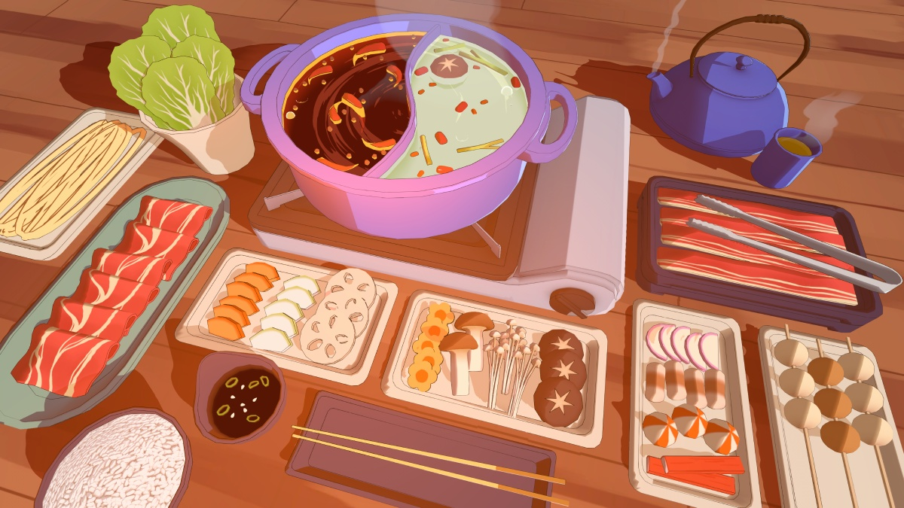
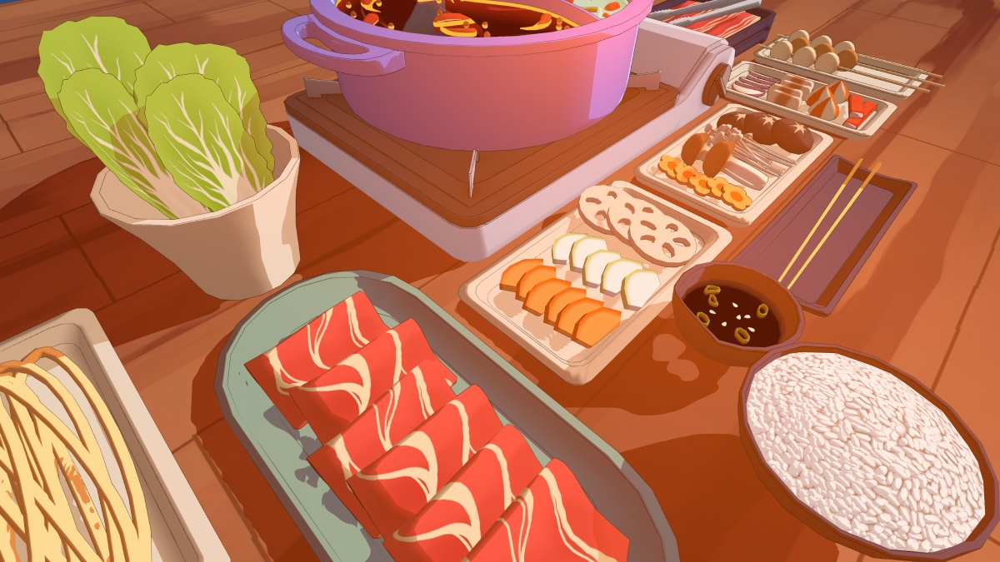
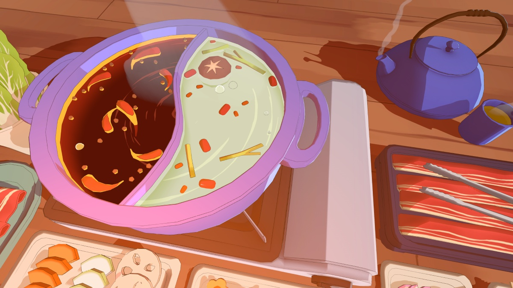
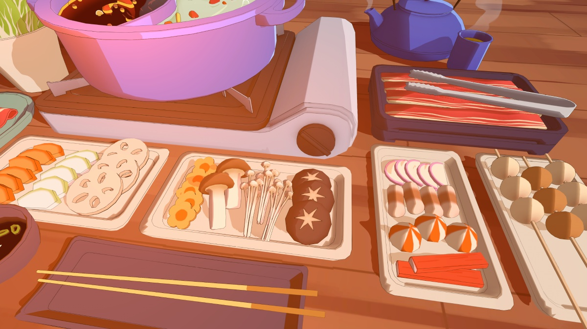
Introduction
My main goal for this project was to implement a post-process outline effect using the Unity Scriptable Render Pipeline. I wanted to use this effect to create my favourite meal in an anime-style. I was inspired by how warm and inviting the food in anime looks!
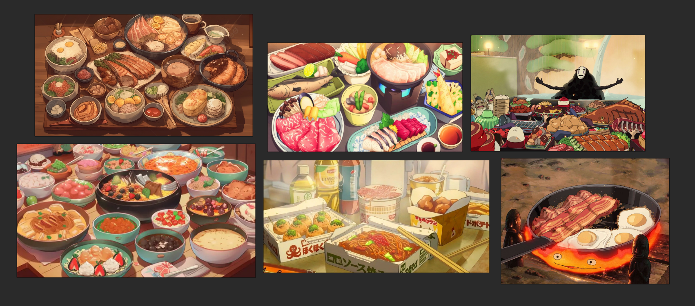
My main references:
Vertex Fragment "Sobel Outline with Unity Post-Processing"
GDC Vault "The Art of Sable Imperfection"
Robin Seibold Outlines Devlog
Post-Process Outlines
Outline Render Feature
First, I created a custom Outline Render Feature using the Unity Scriptable Render Pipeline. In summary, it contains a custom Render Pass that creates a temporary render texture using a specified shader, which is then passed to the outline shader. The outline shader uses the Sobel operator to detect the edges of the render texture, draws the outline, then combines it with the rest of the scene. A faint noise mask is also multiplied over the outlines for a more organic hand-drawn feel. This outline shader result is then blitted to the camera by the Render Pass.
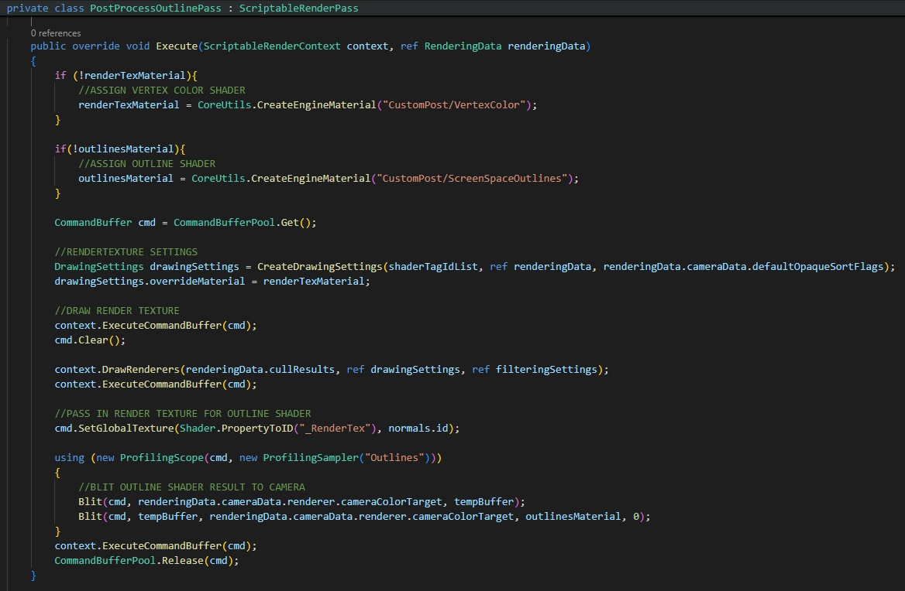
Depth-Based Outlines
The depth texture taken from the camera is commonly used for the Sobel edge detection since it is easy to access and can give decent results. However, it can miss details that are at similar depth and can run into issues with transparent objects since they are not drawn to the depth texture. Depth-Based outlines can be combined with View-Space Normal outlines for a better result, however for this scene, I decided to only use Vertex Color based outlines.
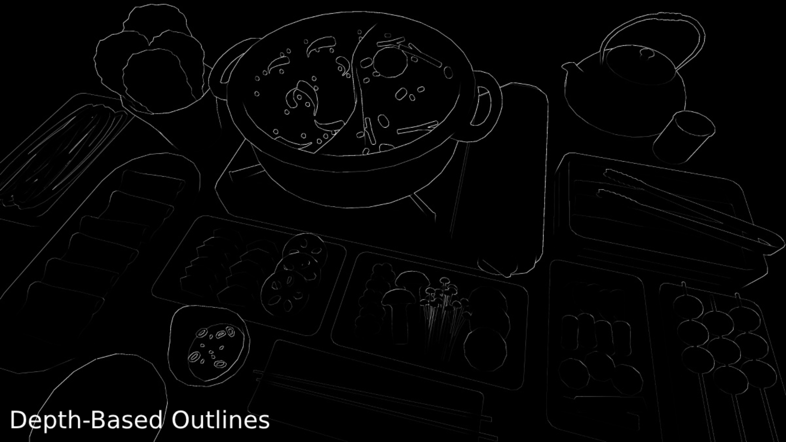
Vertex Color-Based Outlines
Using Vertex Color-based outlines gives a very predictable result, and allows fine control over where the outlines are drawn. The vertex color shader used to create the render texture assigns a random vertex color to each mesh using the world position as a seed.
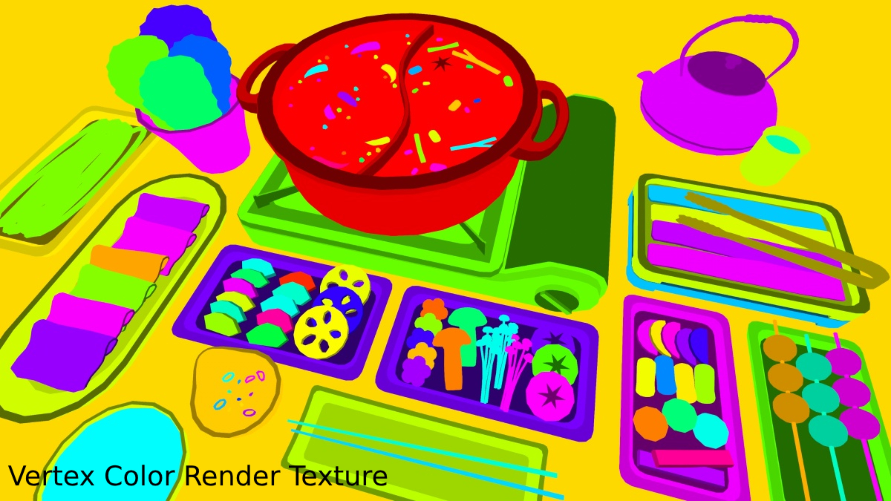
For more complex meshes, I colored each section that should be outlined with a different greyscale value in Blender. The greyscale value will then be multiplied with a random color in the vertex color shader, ensuring both the smaller parts and the entire mesh will be colored differently from other objects in the scene.
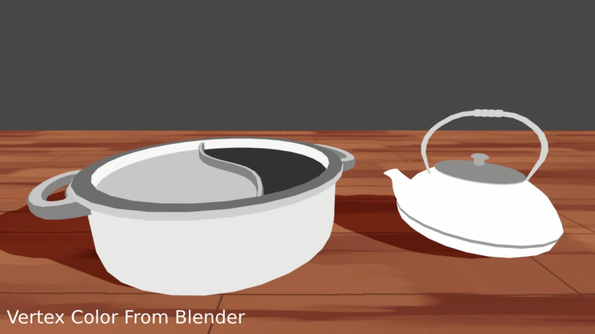
By using just the vertex color, I was also able to solve the problem of the outlines being drawn through the transparent soup since their vertex colors are also drawn to the render texture.
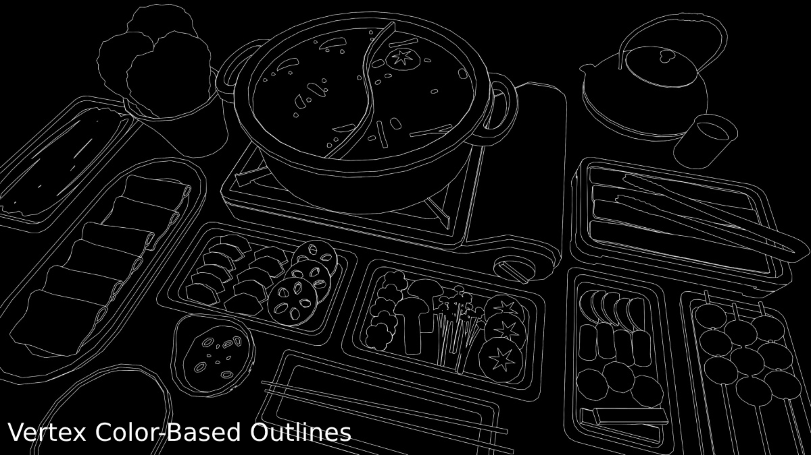
Toon Shader
I used an updated version of my toon shader to achieve the anime-style look. The main change from my toon shader was adding a shadow gradient within the toon shadow to soften the look and give a bit more of a painterly feel. I also added support for point lights, but decided to not step them and keep the light from the point lights soft.
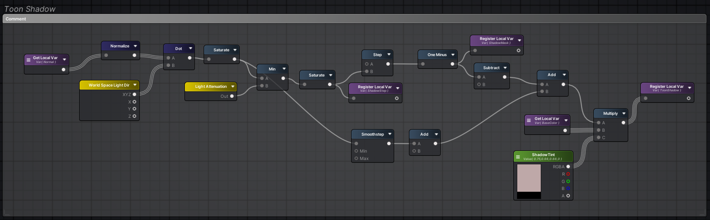
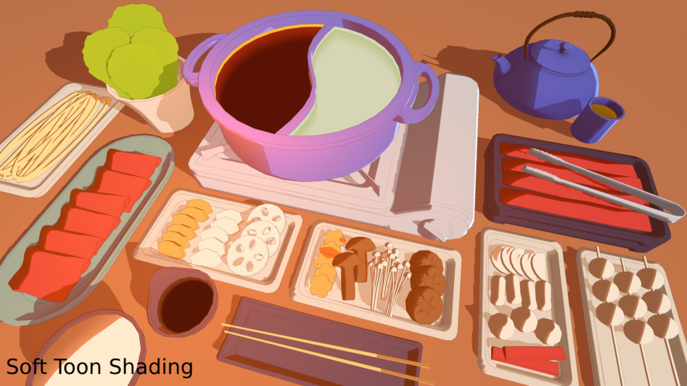
Soup Shader
The soup shader uses two levels of depth, mostly so I could mimic the look of the yellow beef tallow rising to the surface for the spicy Mala soup! This shader is also used for the tea and sauce. A normal texture is also sampled using polar coordinates for the swirls in the soup.
VFX
Steam
First, I drew a couple vertical repeating steam textures in Procreate. The texture is then panned in the shader and layered with another copy but with slightly different offset, tiling, and speed. There is also a subtle distortion in the UVs to create a more organic feel. Finally, the top and bottom of the plane is masked out with a subtle, slow-moving texture to fade in and out the steam.
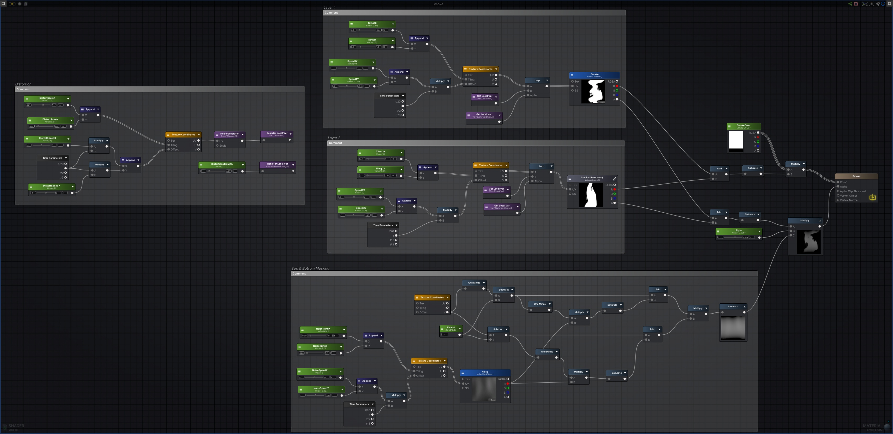
Bubble
The bubbles are made with the particle system and a custom mesh. The alpha is multiplied with a noise texture and the V of the UV coordinates to mask the mesh vertically. This is then multiplied with the vertex color, which is controlled by the particle system. The particle alpha is then faded to 0 over its lifetime and timed with scaling over lifetime to achieve the bubble popping effect.
Textures
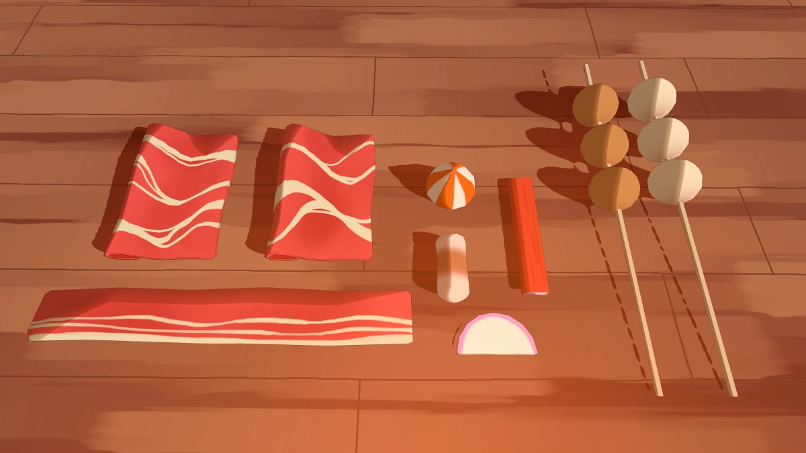
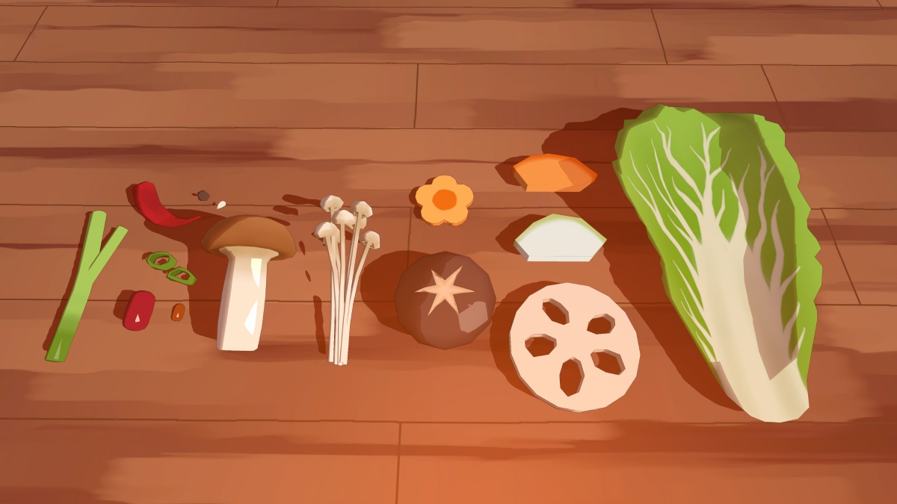
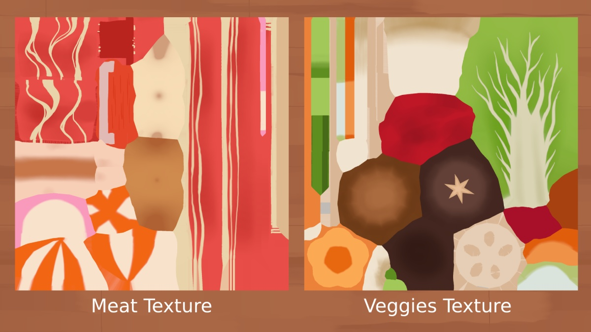
My main goal for this project was to implement a post-process outline effect using the Unity Scriptable Render Pipeline. I wanted to use this effect to create my favourite meal in an anime-style. I was inspired by how warm and inviting the food in anime looks!
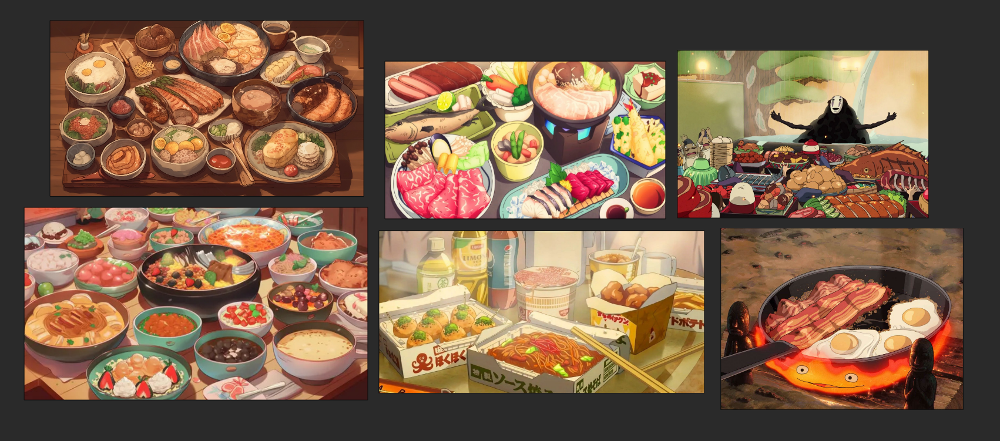
My main references:
Vertex Fragment "Sobel Outline with Unity Post-Processing"
GDC Vault "The Art of Sable Imperfection"
Robin Seibold Outlines Devlog
First, I created a custom Outline Render Feature using the Unity Scriptable Render Pipeline. In summary, it contains a custom Render Pass that creates a temporary render texture using a specified shader, which is then passed to the outline shader. The outline shader uses the Sobel operator to detect the edges of the render texture, draws the outline, then combines it with the rest of the scene. A faint noise mask is also multiplied over the outlines for a more organic hand-drawn feel. This outline shader result is then blitted to the camera by the Render Pass.
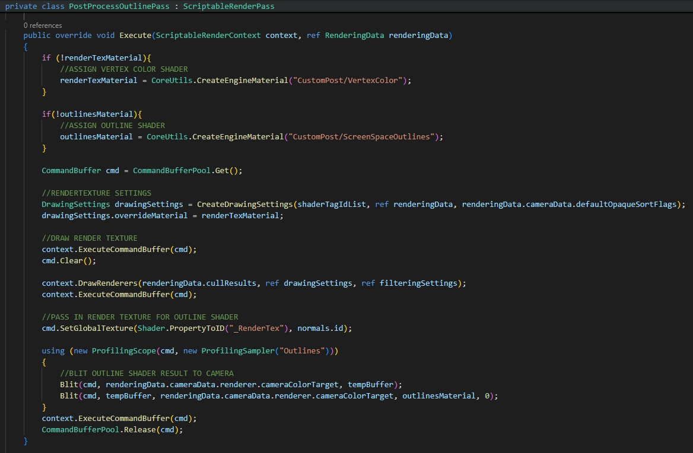
The depth texture taken from the camera is commonly used for the Sobel edge detection since it is easy to access and can give decent results. However, it can miss details that are at similar depth and can run into issues with transparent objects since they are not drawn to the depth texture. Depth-Based outlines can be combined with View-Space Normal outlines for a better result, however for this scene, I decided to only use Vertex Color based outlines.
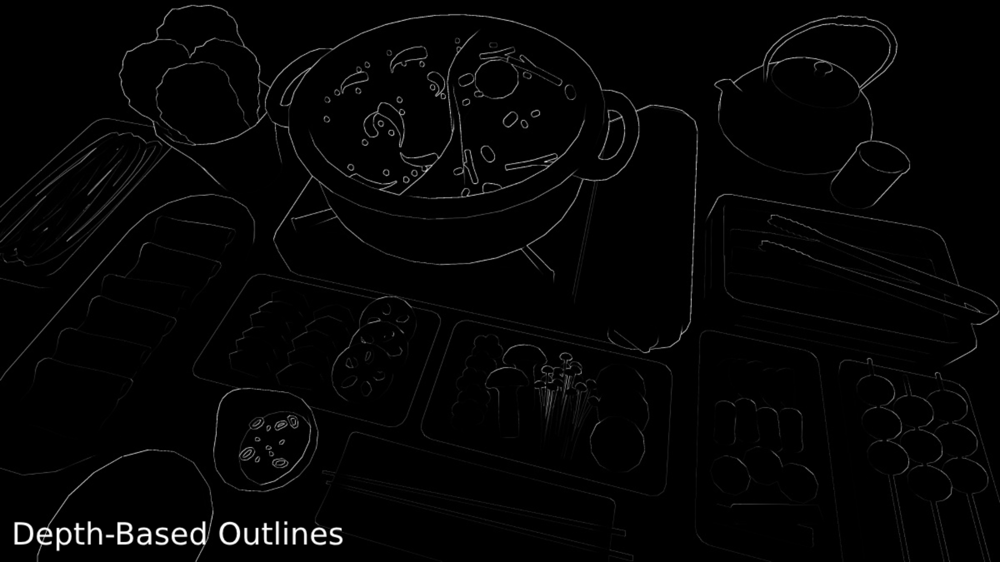
Using Vertex Color-based outlines gives a very predictable result, and allows fine control over where the outlines are drawn. The vertex color shader used to create the render texture assigns a random vertex color to each mesh using the world position as a seed.
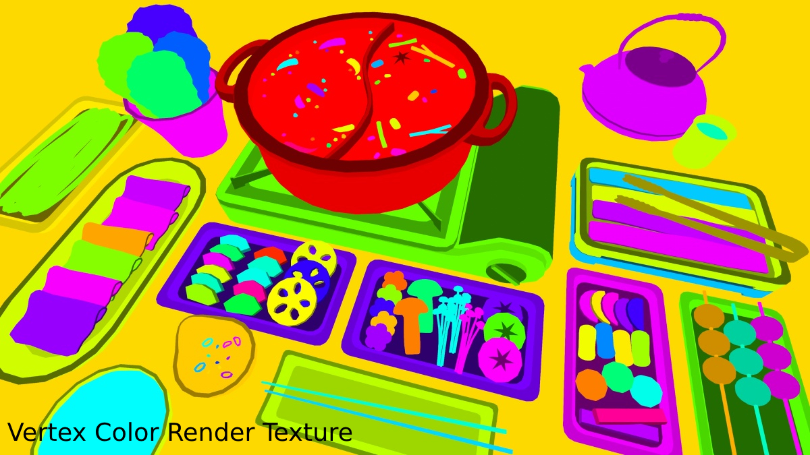
For more complex meshes, I colored each section that should be outlined with a different greyscale value in Blender. The greyscale value will then be multiplied with a random color in the vertex color shader, ensuring both the smaller parts and the entire mesh will be colored differently from other objects in the scene.
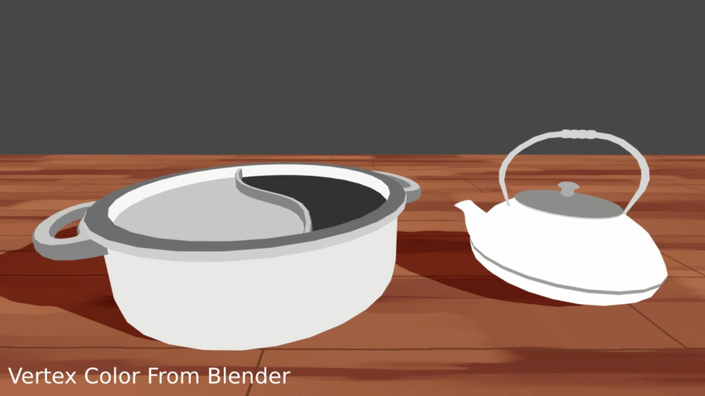
By using just the vertex color, I was also able to solve the problem of the outlines being drawn through the transparent soup since their vertex colors are also drawn to the render texture.
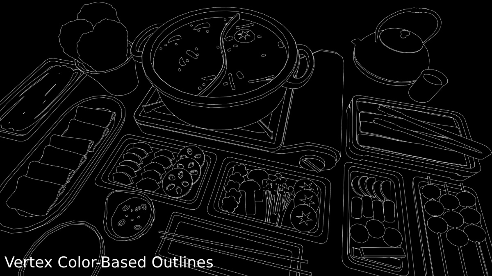
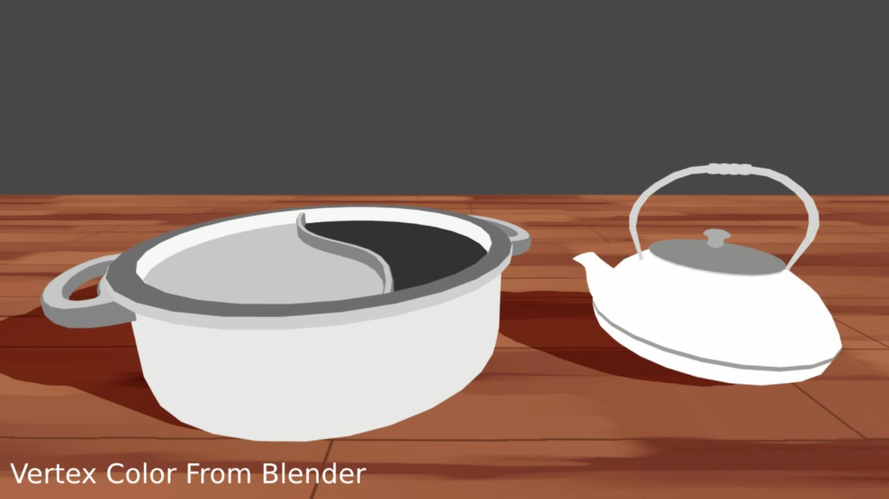